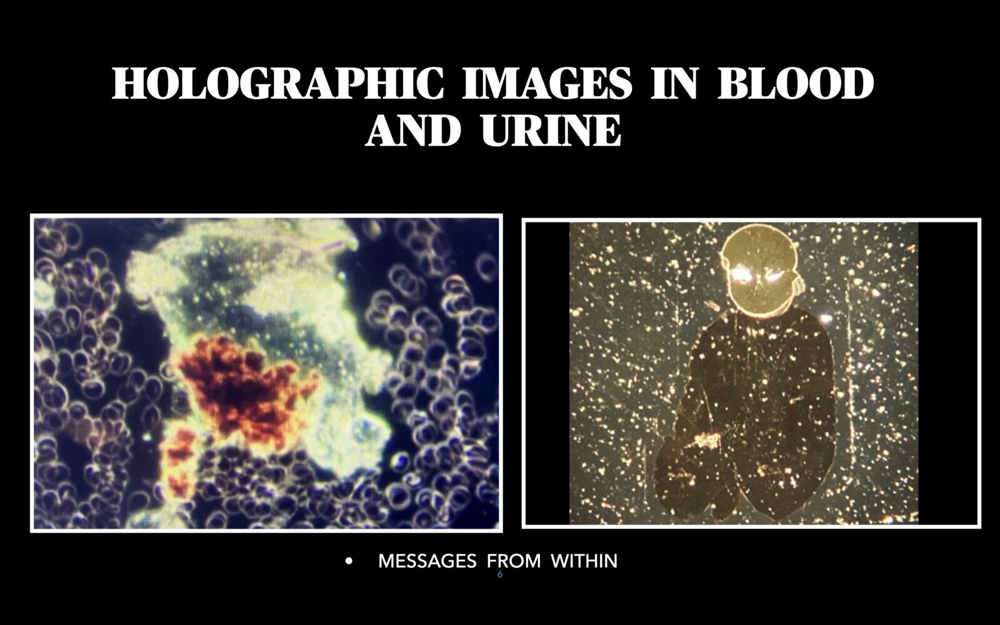

Services
Your blood and urine, up close.
Under the microscope, a single drop of blood or urine holds shapes, patterns, information and light that most people never get to see.

Blood and plasma (urine) consultation
What you receive
- Examination of two samples: one blood and one urine
- A detailed, highly individual report with photographs of your samples
- My observations on what the images suggest about your state of well-being
- A look at how energy is moving through your body and how your body interprets it
- A reflection on the deeper emotional and spiritual side of what your samples show
About the method
My blood work follows an approach developed over more than 40 years by Dr. Harvey Bigelsen. My urine work is my own research, which I call the plasmagraph. When I speak of plasma, I am referring to urine.
I began looking at blood regularly in January 2020. My own practice with urine began on November 1, 2021, and I looked at my first urine sample under the microscope on November 19, 2021. Since then I have spent more than 15,000 hours at the microscope. My focus is on observation and on the beauty and detail of what the microscope reveals.
Who it’s for
This service is for people who feel drawn to the energetic and spiritual nature of their own bodies and well-being, and who want a closer, more visual way of reflecting on themselves, their lives and their choices.
You may be a good fit if you:
- Are curious to see your own blood and urine through the microscope
- Want to understand how energy is moving through your body and how your body interprets it
- Are open to the emotional and spiritual side of what your samples show
- Would like a personal, detailed report you can return to as you reflect on your life and choices
How it works
- Get in touch. Email me at fionagardner1111@gmail.com.
- Receive your kit. I mail you a slide kit, and you receive an email with instructions for collecting your samples at home and returning them.
- Collect and return. Take a finger-prick blood sample and a urine sample, then send the kit back as the email directs.
- Receive your report. I examine your samples under the microscope and send you a detailed, individual report with images by email.
US$950 for both samples, blood and urine
One-on-one conversations
Sometimes what you need is a conversation.
These hourly sessions are open to anyone, whether or not you have had a blood and urine consult, and to any question about your blood, your urine, your well-being or the emotional and spiritual side of your life. We talk through what is on your mind, and I share perspectives, ideas and modalities you may wish to explore further.
You are welcome to bring:
- Questions about your report, if you have had a blood and urine consult
- Any health, well-being, emotional or spiritual question you would like to talk through
- An interest in complementary modalities and approaches, and how you might explore them
What a conversation can look like
Each conversation is shaped by what you bring. Some people want to go deeper into what appeared in their blood and urine report. Others arrive with a question about their well-being, a life choice, or something emotional or spiritual they are sitting with. We go at your pace, and you leave with fresh perspectives and ideas to consider.
How it works
- Email me. Write to fionagardner1111@gmail.com with a little about what you would like to talk about.
- Choose a time. We arrange a time that suits you, and you choose Zoom or telephone.
- Talk it through. We spend the hour together.
Conversations offer perspectives and ideas, not diagnosis or treatment.
US$150 per hour
Important information
This service is observational, educational and spiritual in nature. It is not a medical test, and nothing I share is a medical diagnosis, treatment or advice. Please continue to see your doctor or other qualified healthcare provider for any health concern, and do not change or stop any treatment based on what I share in your results or in a conversation.
Get in touch
To request a consultation or a conversation, or to ask a question, write to me.